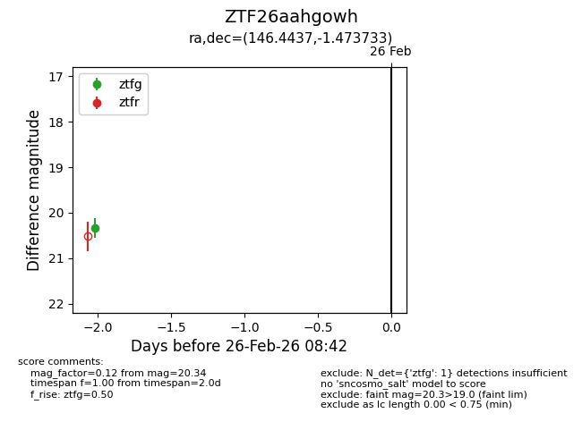
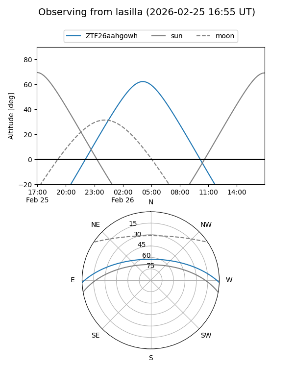
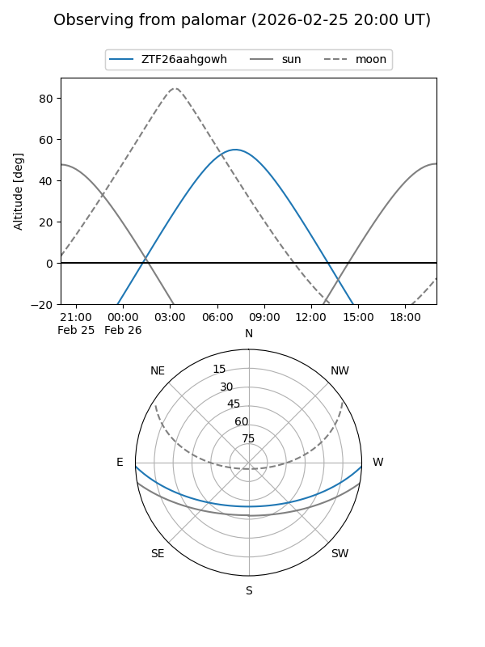
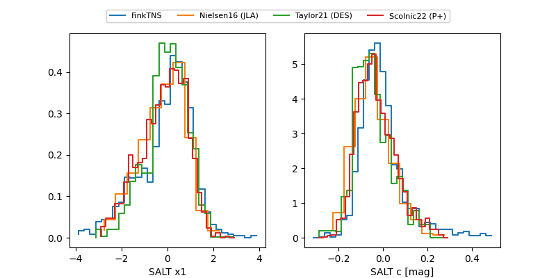

ZTF26aahgowh
Target ZTF26aahgowh at 2026-02-26 08:43
Aliases and brokers:
FINK: link
Lasair: link
ALeRCE: link
alt names
ZTF26aahgowh (ztf,fink_ztf)
Coordinates:
equatorial (ra, dec) = 146.4437,-1.47373
equatorial (HMS+DMS) = 09:45:46.50,-01:28:25.44
galactic (l, b) = (237.8985,+36.98787)
Flags:
Photometry:
last ztfg=20.34
1 ztfg detections
Lightcurve

Visibility


Additional plots
